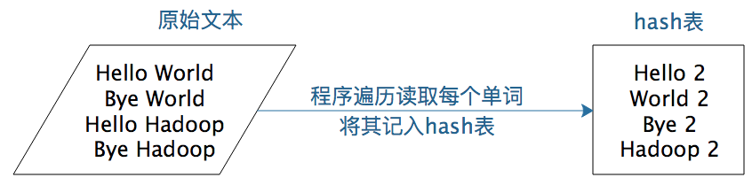
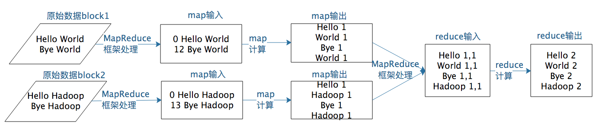
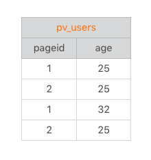

- 00 开篇词 为什么说每个软件工程师都应该懂大数据技术？.md.html
- 01 大数据技术发展史：大数据的前世今生.md.html
- 02 大数据应用发展史：从搜索引擎到人工智能.md.html
- 03 大数据应用领域：数据驱动一切.md.html
- 04 移动计算比移动数据更划算.md.html
- 05 从RAID看垂直伸缩到水平伸缩的演化.md.html
- 06 新技术层出不穷，HDFS依然是存储的王者.md.html
- 07 为什么说MapReduce既是编程模型又是计算框架？.md.html
- 08 MapReduce如何让数据完成一次旅行？.md.html
- 09 为什么我们管Yarn叫作资源调度框架？.md.html
- 10 模块答疑：我们能从Hadoop学到什么？.md.html
- 11 Hive是如何让MapReduce实现SQL操作的？.md.html
- 12 我们并没有觉得MapReduce速度慢，直到Spark出现.md.html
- 13 同样的本质，为何Spark可以更高效？.md.html
- 14 BigTable的开源实现：HBase.md.html
- 15 流式计算的代表：Storm、Flink、Spark Streaming.md.html
- 16 ZooKeeper是如何保证数据一致性的？.md.html
- 17 模块答疑：这么多技术，到底都能用在什么场景里？.md.html
- 18 如何自己开发一个大数据SQL引擎？.md.html
- 19 Spark的性能优化案例分析（上）.md.html
- 20 Spark的性能优化案例分析（下）.md.html
- 21 从阿里内部产品看海量数据处理系统的设计（上）：Doris的立项.md.html
- 22 从阿里内部产品看海量数据处理系统的设计（下）：架构与创新.md.html
- 23 大数据基准测试可以带来什么好处？.md.html
- 24 从大数据性能测试工具Dew看如何快速开发大数据系统.md.html
- 25 模块答疑：我能从大厂的大数据开发实践中学到什么？.md.html
- 26 互联网产品 + 大数据产品 = 大数据平台.md.html
- 27 大数据从哪里来？.md.html
- 28 知名大厂如何搭建大数据平台？.md.html
- 29 盘点可供中小企业参考的商业大数据平台.md.html
- 30 当大数据遇上物联网.md.html
- 31 模块答疑：为什么大数据平台至关重要？.md.html
- 32 互联网运营数据指标与可视化监控.md.html
- 33 一个电商网站订单下降的数据分析案例.md.html
- 34 A_B测试与灰度发布必知必会.md.html
- 35 如何利用大数据成为“增长黑客”？.md.html
- 36 模块答疑：为什么说数据驱动运营？.md.html
- 37 如何对数据进行分类和预测？.md.html
- 38 如何发掘数据之间的关系？.md.html
- 39 如何预测用户的喜好？.md.html
- 40 机器学习的数学原理是什么？.md.html
- 41 从感知机到神经网络算法.md.html
- 42 模块答疑：软件工程师如何进入人工智能领域？.md.html
- 所有的不确定都是机会——智慧写给你的新年寄语.md.html
- 第2季回归丨大数据之后，让我们回归后端.md.html
- 结束语 未来的你，有无限可能.md.html
- 捐赠
07 为什么说MapReduce既是编程模型又是计算框架？
在Hadoop问世之前，其实已经有了分布式计算，只是那个时候的分布式计算都是专用的系统，只能专门处理某一类计算，比如进行大规模数据的排序。很显然，这样的系统无法复用到其他的大数据计算场景，每一种应用都需要开发与维护专门的系统。而Hadoop MapReduce的出现，使得大数据计算通用编程成为可能。我们只要遵循MapReduce编程模型编写业务处理逻辑代码，就可以运行在Hadoop分布式集群上，无需关心分布式计算是如何完成的。也就是说，我们只需要关心业务逻辑，不用关心系统调用与运行环境，这和我们目前的主流开发方式是一致的。
请你先回忆一下，在前面专栏第4期我们讨论过，大数据计算的核心思路是移动计算比移动数据更划算。既然计算方法跟传统计算方法不一样，移动计算而不是移动数据，那么用传统的编程模型进行大数据计算就会遇到很多困难，因此Hadoop大数据计算使用了一种叫作MapReduce的编程模型。
其实MapReduce编程模型并不是Hadoop原创，甚至也不是Google原创，但是Google和Hadoop创造性地将MapReduce编程模型用到大数据计算上，立刻产生了神奇的效果，看似复杂的各种各样的机器学习、数据挖掘、SQL处理等大数据计算变得简单清晰起来。
今天我们就来聊聊Hadoop解决大规模数据分布式计算的方案——MapReduce。
在我看来，MapReduce既是一个编程模型，又是一个计算框架。也就是说，开发人员必须基于MapReduce编程模型进行编程开发，然后将程序通过MapReduce计算框架分发到Hadoop集群中运行。我们先看一下作为编程模型的MapReduce。
为什么说MapReduce是一种非常简单又非常强大的编程模型？
简单在于其编程模型只包含Map和Reduce两个过程，map的主要输入是一对
同时，MapReduce又是非常强大的，不管是关系代数运算（SQL计算），还是矩阵运算（图计算），大数据领域几乎所有的计算需求都可以通过MapReduce编程来实现。
下面，我以WordCount程序为例，一起来看下MapReduce的计算过程。
WordCount主要解决的是文本处理中词频统计的问题，就是统计文本中每一个单词出现的次数。如果只是统计一篇文章的词频，几十KB到几MB的数据，只需要写一个程序，将数据读入内存，建一个Hash表记录每个词出现的次数就可以了。这个统计过程你可以看下面这张图。

如果用Python语言，单机处理WordCount的代码是这样的。
# 文本前期处理
strl_ist = str.replace('\n', '').lower().split(' ')
count_dict = {}
# 如果字典里有该单词则加1，否则添加入字典
for str in strl_ist:
if str in count_dict.keys():
count_dict[str] = count_dict[str] + 1
else:
count_dict[str] = 1
简单说来，就是建一个Hash表，然后将字符串里的每个词放到这个Hash表里。如果这个词第一次放到Hash表，就新建一个Key、Value对，Key是这个词，Value是1。如果Hash表里已经有这个词了，那么就给这个词的Value + 1。
小数据量用单机统计词频很简单，但是如果想统计全世界互联网所有网页（数万亿计）的词频数（而这正是Google这样的搜索引擎的典型需求），不可能写一个程序把全世界的网页都读入内存，这时候就需要用MapReduce编程来解决。
WordCount的MapReduce程序如下。
public class WordCount {
public static class TokenizerMapper
extends Mapper<Object, Text, Text, IntWritable>{
private final static IntWritable one = new IntWritable(1);
private Text word = new Text();
public void map(Object key, Text value, Context context
) throws IOException, InterruptedException {
StringTokenizer itr = new StringTokenizer(value.toString());
while (itr.hasMoreTokens()) {
word.set(itr.nextToken());
context.write(word, one);
}
}
}
public static class IntSumReducer
extends Reducer<Text,IntWritable,Text,IntWritable> {
private IntWritable result = new IntWritable();
public void reduce(Text key, Iterable<IntWritable> values,
Context context
) throws IOException, InterruptedException {
int sum = 0;
for (IntWritable val : values) {
sum += val.get();
}
result.set(sum);
context.write(key, result);
}
}
}
你可以从这段代码中看到，MapReduce版本WordCount程序的核心是一个map函数和一个reduce函数。
map函数的输入主要是一个
public void map(Object key, Text value, Context context
)
map函数的计算过程是，将这行文本中的单词提取出来，针对每个单词输出一个
MapReduce计算框架会将这些
public void reduce(Text key, Iterable<IntWritable> values,
Context context
)
这里reduce的输入参数Values就是由很多个1组成的集合，而Key就是具体的单词word。
reduce函数的计算过程是，将这个集合里的1求和，再将单词（word）和这个和（sum）组成一个
一个map函数可以针对一部分数据进行运算，这样就可以将一个大数据切分成很多块（这也正是HDFS所做的），MapReduce计算框架为每个数据块分配一个map函数去计算，从而实现大数据的分布式计算。
假设有两个数据块的文本数据需要进行词频统计，MapReduce计算过程如下图所示。

以上就是MapReduce编程模型的主要计算过程和原理，但是这样一个MapReduce程序要想在分布式环境中执行，并处理海量的大规模数据，还需要一个计算框架，能够调度执行这个MapReduce程序，使它在分布式的集群中并行运行，而这个计算框架也叫MapReduce。
所以，当我们说MapReduce的时候，可能指编程模型，也就是一个MapReduce程序；也可能是指计算框架，调度执行大数据的分布式计算。关于MapReduce计算框架，我们下期再详细聊。
小结
总结一下，今天我们学习了MapReduce编程模型。这个模型既简单又强大，简单是因为它只包含Map和Reduce两个过程，强大之处又在于它可以实现大数据领域几乎所有的计算需求。这也正是MapReduce这个模型令人着迷的地方。
说起模型，我想跟你聊聊我的体会。
模型是人们对一类事物的概括与抽象，可以帮助我们更好地理解事物的本质，更方便地解决问题。比如，数学公式是我们对物理与数学规律的抽象，地图和沙盘是我们对地理空间的抽象，软件架构图是软件工程师对软件系统的抽象。
通过抽象，我们更容易把握事物的内在规律，而不是被纷繁复杂的事物表象所迷惑，更进一步深刻地认识这个世界。通过抽象，伽利略发现力是改变物体运动的原因，而不是使物体运动的原因，为全人类打开了现代科学的大门。
这些年，我自己认识了很多优秀的人，他们各有所长、各有特点，但是无一例外都有个共同的特征，就是对事物的洞察力。他们能够穿透事物的层层迷雾，直指问题的核心和要害，不会犹豫和迷茫，轻松出手就搞定了其他人看起来无比艰难的事情。有时候光是看他们做事就能感受到一种美感，让人意醉神迷。
这种洞察力就是来源于他们对事物的抽象能力，虽然我不知道这种能力缘何而来，但是见识了这种能力以后，我也非常渴望拥有对事物的抽象能力。所以在遇到问题的时候，我就会停下来思考：这个问题为什么会出现，它揭示出来背后的规律是什么，我应该如何做。甚至有时候会把这些优秀的人带入进思考：如果是戴老师、如果是潘大侠，他会如何看待、如何解决这个问题。通过这种不断地训练，虽然和那些最优秀的人相比还是有巨大的差距，但是仍然能够感受到自己的进步，这些小小的进步也会让自己产生大大的快乐，一种不荒废光阴、没有虚度此生的感觉。
我希望你也能够不断训练自己，遇到问题的时候，停下来思考一下：这些现象背后的规律是什么。有时候并不需要多么艰深的思考，仅仅就是停一下，就会让你察觉到以前不曾注意到的一些情况，进而发现事物的深层规律。这就是洞察力。
思考题
对于这样一张数据表

如果存储在HDFS中，每一行记录在HDFS对应一行文本，文本格式是
1,25
2,25
1,32
2,25
根据上面WordCount的示例，请你写一个MapReduce程序，得到下面这条SQL的计算结果。
SELECT pageid, age, count(1) FROM pv_users GROUP BY pageid, age;
TIPS：如何用MapReduce实现SQL计算，我们在后面还会进一步讨论。
欢迎你写下自己的思考或疑问，与我和其他同学一起讨论。
© 2019 - 2023 Liangliang Lee. Powered by gin and hexo-theme-book.